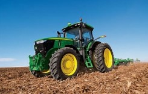
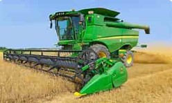

Your source for high-quality agricultural machinery and equipment.
Explore our range of agricultural machinery available for rent, including tractors, plows, harvesters, and more.
 If you have any questions or would like to inquire about our agricultural machinery rental services, please don't hesitate to get in touch with us. We're here to assist you.